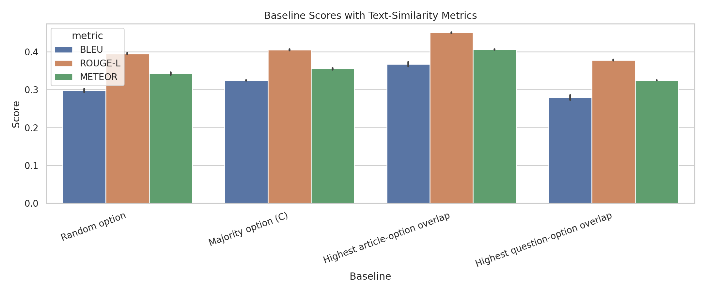
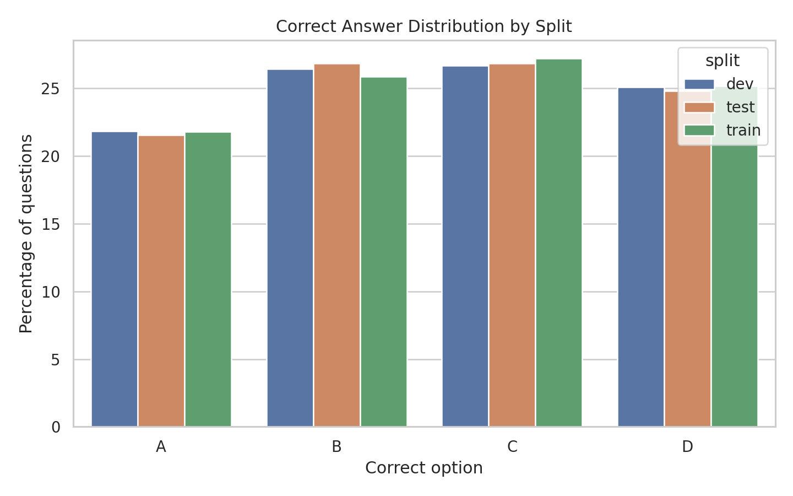
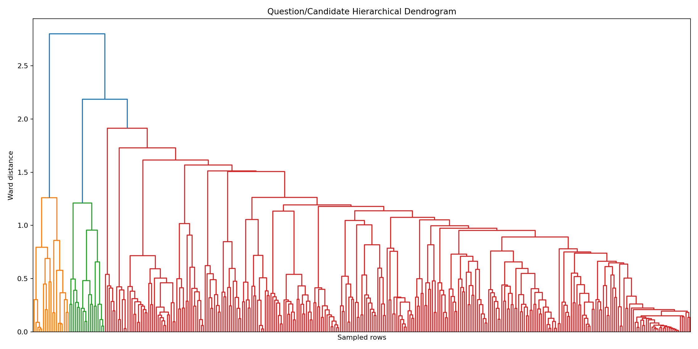
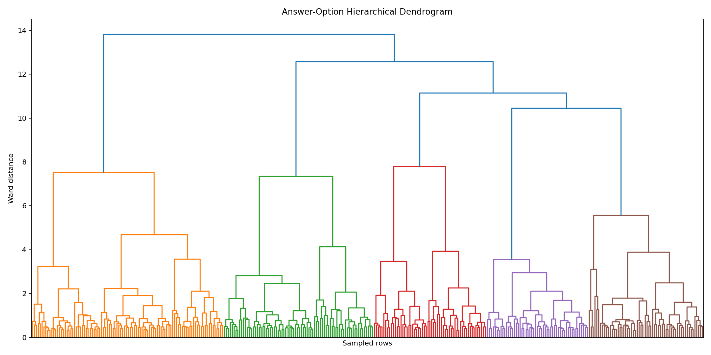
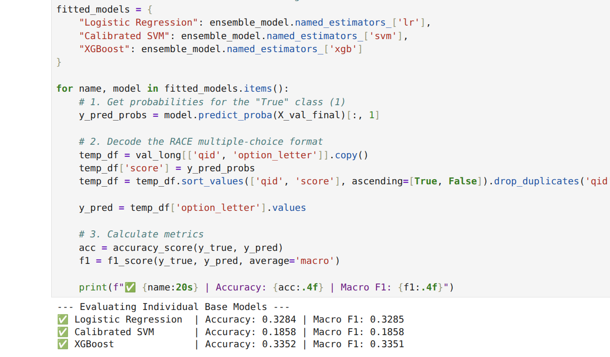

AI project presentation
RACE Reading Comprehension Project
An end-to-end quiz system that verifies answers, generates questions, creates distractors and hints, and exposes everything through a Streamlit interface.
Model A
Answer verification plus supervised question generation.
Model B
Passage-grounded distractors and graduated hints.
UI
Interactive quiz flow with analytics and backend switching.
Abstract
End-to-end reading comprehension quiz generation and evaluation.
This project builds a RACE-based quiz system that preprocesses official splits, verifies multiple-choice answers, generates questions, creates plausible distractors, ranks progressive hints, and exposes the workflow through Streamlit. Model A combines a classical LR + XGBoost verifier, a supervised template-based question generator, an unsupervised clustering layer, and an optional BERT multiple-choice backend. Model B adds distractor and hint generation with supervised ranking and passage-grounded candidate extraction. Evaluation uses BLEU, ROUGE-L, METEOR, exact-match diagnostics, Precision@3, Recall@3, F1@3, top-1 hint accuracy, and MRR.
Introduction & Motivation
Turn passages into an interactive reading quiz.
The system starts from a RACE passage and supports both the learner-facing experience and the developer-facing model evaluation workflow.
- Input: article, question, and four candidate answers from RACE or custom text.
- Model A: rank answer options and generate answerable questions.
- Model B: generate three plausible wrong options and three hint levels.
- Output: quiz view, answer checking, hints, model scores, latency, and downloadable results.
Related Work
The project is grounded in established NLP and ML research.
The techniques used in the project map directly to reading-comprehension datasets, vector-space text matching, supervised classifiers, ensemble ranking, clustering, neural language models, and automatic text evaluation.
- RACE provides exam-style reading-comprehension passages and questions [1].
- Logistic Regression provides the classical binary option-scoring baseline [2].
- Random Forest and XGBoost support tree-based ranking and boosted model comparison [3-4].
- BERT provides the advanced multiple-choice verifier backend [5].
- ROUGE and METEOR support the answer-text evaluation discussion [6-7].
Evaluation papers
The project still reports BLEU, ROUGE-L, and METEOR, while the remaining references cite the evaluation papers kept in the bibliography.
Dataset Analysis
Clean RACE splits with no exact leakage.
The project uses the official train, dev, and test splits across middle-school and high-school reading passages.
| Split | Questions | Passages | Avg article words | Avg question words | Avg answer words |
|---|---|---|---|---|---|
| train | 87,866 | 25,135 | 278.67 | 9.10 | 5.95 |
| dev | 4,887 | 1,389 | 275.30 | 8.94 | 5.95 |
| test | 4,934 | 1,407 | 277.01 | 9.05 | 6.06 |
EDA signals
Lexical overlap helps, but it is not enough.
The strongest simple baseline picks the option with highest article-option overlap, which justifies similarity features while showing room for learned ranking.


System architecture
A reproducible pipeline from raw RACE files to quiz UI.
Preprocessing and feature engineering
The classical model learns how options compare within the same question.
The key improvement was moving beyond independent option rows and adding question-relative features across A, B, C, and D.
- TF-IDF cosine: question-option, article-option, and question-article.
- Lexical overlap: article-option and question-option Jaccard scores.
- Length and ratio features for article, question, and option text.
- Option-position one-hot features for A, B, C, and D.
- Within-question ranks, max flags, z-scores, and differences from group mean/max/min.
| Classical model | Split | BLEU | ROUGE-L | METEOR | Exact diagnostic |
|---|---|---|---|---|---|
| Before relative features | test | 0.4069 | 0.4847 | 0.4336 | 0.3640 |
| With relative features | test | 0.4106 | 0.4922 | 0.4438 | 0.3739 |
Model A classical verifier
LR + XGBoost is the assignment-aligned final classical baseline.
It keeps the matrix sparse, combines traditional supervised models, and beats the strongest simple baseline on all required test metrics.
| Model | Test BLEU | ROUGE-L | METEOR | Exact |
|---|---|---|---|---|
| Logistic Regression | 0.3963 | 0.4717 | 0.4214 | 0.3490 |
| Linear SVM | 0.4032 | 0.4768 | 0.4265 | 0.3539 |
| XGBoost | 0.4017 | 0.4828 | 0.4309 | 0.3608 |
| LR + XGBoost final | 0.4106 | 0.4922 | 0.4438 | 0.3739 |
Why this matters
The classical model satisfies the traditional ML requirement while staying interpretable: text similarity, option position, length, and within-question competition all have clear roles.
Advanced backend
BERT multiple-choice is the strongest measured Model A.
The best checkpoint was trained in two stages on 60,000 unique RACE questions and uses the RTX 3060 GPU when available.
Key finding
Binary BERT underperformed because option-row accuracy is not the same as selecting one correct answer. The multiple-choice objective matches the task directly.
Model A generation
Question generation is a supervised hybrid, not just cloze blanks.
The generator extracts answer spans, predicts question type, applies WH/cloze templates, and ranks generated candidates.
Unsupervised Model A layer
K-Means adds discovery and metadata, not the final answer decision.
Clustering satisfies the unsupervised requirement and helps explain broad question/answer patterns, but supervised verification remains stronger.


| Clustering task | Best K | Test silhouette | Useful outcome | Limitation |
|---|---|---|---|---|
| Question types | 4 | 0.1853 | Finds broad cloze, which, and title-style groups | Types overlap |
| Answer options | 5 | 0.3183 | Finds cleaner geometric clusters | Test answer accuracy only 0.2675 |
Model B distractors and hints
Model B completes the quiz: wrong options plus support hints.
It uses question-type control, passage candidates, supervised ranking, diversity filtering, and evidence sentence ranking.
Distractor generator
- Uses official wrong options as supervised positive examples.
- Ranks passage and option-pool candidates with Logistic Regression and Random Forest comparisons.
- Applies type compatibility, lexical similarity, passage frequency, and diversity filters.
Hint generator
- Ranks evidence sentences using overlap, answer presence, sentence length, and sentence position.
- Shows Hint 1 vague, Hint 2 contextual, and Hint 3 near-explicit with the answer masked.
Streamlit application
The UI demonstrates the full system end to end.
It is built for a passage-first quiz workflow and exposes enough developer analytics for grading and debugging.
1. Article input
Load RACE samples, browse previous/next/random examples, or paste a custom passage.
2. Quiz view
Generate a question, mix the correct answer with Model B distractors, and check the selected answer.
3. Hint panel
Reveal three progressive hints before showing the final answer.
Developer dashboard
Backend selector, option score table, confidence chart, Model A accuracy/precision/recall/F1, confusion matrix, Model B tables, latency tracking, CSV export, and JSON download.
Project artifacts
The repo is organized for training, inference, evaluation, and reporting.
| Area | Important files |
|---|---|
| Data | data/raw, data/processed, report/eda_outputs |
| Model A | src/model_a_inference.py, src/model_a_generation.py, models/model_a |
| Model B | src/model_b.py, src/train_model_b.py, models/model_b/traditional |
| Rubric entrypoints | src/preprocessing.py, src/model_a_train.py, src/model_b_train.py, src/inference.py, src/evaluate.py |
| Presentation/reporting | README.md, report/final_report.md, report/final_report.pdf |
Evaluation & Discussion
What mattered most in the results.
- Article-option lexical overlap is a useful baseline signal, but learned models outperform it.
- Within-question relative features improved the classical verifier on every required test metric.
- BERT multiple-choice works better than binary answer verification because it matches the four-way decision.
- Question generation benefits from typed templates plus a learned candidate ranker.
- K-Means is useful for analysis and metadata, not as the main answer selector.
- Model B makes the demo complete by generating distractors and progressive hints.

Limitations & Future Work
Strong project coverage, with clear next steps.
The system is reproducible and feature-complete, but deeper semantics and human evaluation would make the work stronger.
Limitations
- Classical verification can miss paraphrase-heavy or multi-sentence reasoning cases.
- BERT performs better but needs more compute and checkpoint management.
- Template question generation is explainable, but some WH questions sound rigid.
- Model B distractor metrics are strongest in the option-pool evaluation setting.
Future work
- Add semantic distractor evaluation and human quality ratings.
- Try stronger neural generation or retrieval-augmented generation for questions.
- Run ablation studies for feature groups, question types, and hint features.
- Calibrate confidence scores for safer UI feedback.
Suggested presentation flow
Demo the system in the same order the user experiences it.
Start with a RACE passage, run generation, answer the quiz, reveal hints, then switch to the analytics dashboard to connect the demo back to the measured results.
- 1. Load a RACE sample or paste a custom article.
- 2. Generate a question and correct answer with Model A.
- 3. Use Model B distractors to form the quiz options.
- 4. Reveal hints and check an answer.
- 5. Show backend metrics, option scores, and exports.
Conclusion
The project delivers the full reading-comprehension quiz pipeline.
The final system combines clean RACE preprocessing, classical and neural answer verification, supervised question generation, unsupervised analysis, distractor generation, hint ranking, and a usable Streamlit interface. BERT multiple-choice is the strongest measured verifier, while LR + XGBoost remains the best rubric-aligned classical baseline.
References
Research papers behind the project techniques.
[1] Lai et al. 2017. RACE: Large-scale ReAding Comprehension Dataset From Examinations.
[2] Cox. 1958. The Regression Analysis of Binary Sequences.
[3] Breiman. 2001. Random Forests.
[4] Chen and Guestrin. 2016. XGBoost: A Scalable Tree Boosting System.
[5] Devlin et al. 2019. BERT: Pre-training of Deep Bidirectional Transformers.
[6] Lin. 2004. ROUGE: A Package for Automatic Evaluation of Summaries.
[7] Banerjee and Lavie. 2005. METEOR: An Automatic Metric for MT Evaluation.
Open this file in a browser. Use arrow keys to navigate, Home/End to jump, and the browser print dialog to export to PDF.